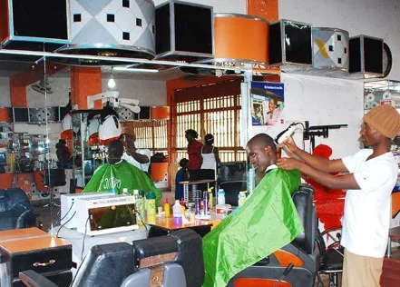

Expanded Nursing Uganda Explanation
Small business in the economy should be understood beyond a short definition. Link the concept to patient history, focused assessment, common risks, nursing priorities, documentation and evaluation of outcomes.
Contents — 13 sections (tap to expand)
01 SMALL BUSINESS IN THE ECONOMY
A small business is a business that uses small capital and it can be owned by one person or few people. The capital contribution is therefore from these few individuals who often control the decision-making process. In addition to this, small businesses have few employees.
Small Businesses are privately owned corporations, partnerships or sole proprietorships with fewer employees & revenue than regular-sized businesses.
A business which functions on a small scale level involves less capital investment, less number of labour and fewer machines to operate is known as a small business.
02 Characteristics of Small Business
- Independent Management : Small businesses are managed independently, meaning that they are not subsidiaries or divisions of larger companies. This independence allows for more flexibility in decision-making.
- Closely Held Ownership : Small businesses often have closely held ownership, meaning that the ownership is concentrated in the hands of a few individuals or families rather than being publicly traded on the stock market.
- Local Operations: Small businesses usually operate on a local scale, serving a specific geographic area or community. They may have one or a few locations rather than a widespread presence.
- Small Size : Small businesses are characterized by their small size, which can be measured in various ways:
- Number of Employees : Small businesses have a limited number of employees, often fewer than 500 according to the U.S. Small Business Administration. In Uganda, employing fewer than 5.
- Fixed Assets: They have relatively small amounts of fixed assets such as property, equipment, and machinery.
- Annual Sales Volume: Small businesses have lower annual sales volumes compared to larger corporations.
- Capital Investment: They require less initial capital investment to start and operate compared to larger enterprises.
03 Types of Small Business Activities
- Manufacturing : This type of small business involves producing goods through various processes, such as fabrication, assembly, or production. Examples include small-scale factories that manufacture clothing, furniture, food products, or electronics.
- Wholesaling : Wholesaling small businesses purchase goods in bulk from manufacturers or producers and then sell them in smaller quantities to retailers or other businesses. These businesses act as intermediaries in the supply chain, distributing products to a broader market.
- Retailing : Retail small businesses sell goods directly to consumers through physical storefronts, online platforms, or both. These businesses operate in various sectors, including clothing, Pharmaceuticals, electronics, groceries, cosmetics, and household goods, catering to the end consumer’s needs and preferences.
- Service : Service-based small businesses offer intangible services to individuals or other businesses, addressing specific needs or requirements. Some common types of service businesses include:
- Professional Service : These businesses offer specialized expertise or skills in fields such as law, accounting, consulting, marketing, or graphic design.
- Financial Service : Financial service businesses provide assistance and expertise in managing money, investments, insurance, loans, or financial planning.
- Transport Service : Businesses in this category offer transportation services, such as taxi companies, courier services, shipping companies, or logistics providers, facilitating the movement of goods or people from one place to another.
- Repair Service : Repair service businesses specialize in fixing or restoring various items, equipment, or appliances, such as automotive repair shops, electronic repair services, appliance repair technicians, or home maintenance services.
- Construction Service : Construction service businesses engage in building, renovating, or repairing structures, infrastructure, or facilities, including contractors, plumbers, electricians, carpenters, and landscapers.
04 Importance of Small Business
- Encourages Innovation and Entrepreneurship : Small businesses often serve as stages for innovation and entrepreneurship. With fewer bureaucratic issues, they can quickly adapt to changing market trends, introduce new ideas, and pioneer innovative products or services.
- Complementary to Large Business : Small businesses complement the activities of large businesses by offering their products or services to the consumer market, then providing personalized customer experiences and choices back to big businesses.
- Flexibility in Operations : Small businesses have the advantage of being more flexible in their operations compared to larger ones. They can quickly respond to market demands, adjust their strategies, and implement changes without the burden of organizational structures.
- Job Creation : Small businesses play a big role in job creation, particularly in local communities. They serve as reliable sources of employment, offering opportunities for individuals with varying skill levels and backgrounds. By hiring locally, they contribute to reducing unemployment rates and stimulating economic growth.
- Maintains Close Relationship with Customers and Community : Small businesses often maintain strong relationships with their customers and communities. They provide personalized services, engage in direct communication, and actively participate in local events or initiatives. This closeness builds trust, loyalty, and a sense of belonging within the community.
- Stimulates Competition : Small businesses introduce competition into the market, driving efficiency, innovation, and quality improvements. Their presence encourages larger firms to improve their offerings, and provide better value to consumers.
- Higher Financial Rewards : While small businesses may face initial financial challenges, successful ones can gain rewards for entrepreneurs. With ownership comes the opportunity for greater financial independence, wealth accumulation, and long-term prosperity.
- Supports Economic Diversity : Small businesses contribute to economic diversity by diversifying revenue streams, creating alternative sources of income, and reducing dependence on a few large corporations. This diversity strengthens the economy against shocks in specific industries.
- Preserves Local Culture and Identity : Small businesses reflect the unique culture, traditions, and identity of their local communities. They showcase indigenous products, support local craft, and preserve the culture of society.
- Promotes Social Responsibility : Small businesses engage in social responsibility initiatives, such as supporting local charities or adopting environmentally friendly practices. They contribute to the well-being of society and the environment.
05 Challenges of Small Business
- Serving a Well-Defined Market : Small businesses often struggle to identify and reach their target market effectively. Understanding customer needs and preferences is important for success.
- Acquiring Sufficient Capital: Limited access to funds is a common challenge for small businesses. Securing financing for startup costs, expansion, or day-to-day operations can be difficult, especially without a solid financial track record.
- Acquiring and Using Human Resources : Finding and retaining skilled employees within budget constraints can be challenging for small businesses, managing and utilizing human resources is essential for productivity and growth.
- Staying Informed : Keeping up with industry trends, market changes, and technological advancements is great for small businesses to remain competitive. However, staying informed requires time and resources that may be limited.
- Managerial Know-How : Small business owners often face the challenge of acquiring the necessary management skills to run their businesses effectively. This includes financial management, marketing strategies, and operational planning.
- Time Management: With limited resources and personnel, small business owners must juggle multiple responsibilities and tasks. Proper time management is essential to prioritize activities and maximize productivity.
- Coping with Government Regulations: Small businesses must comply with various regulations and legal requirements, which can be complex and time-consuming to navigate. Failure to comply can result in fines or legal consequences.
- Adapting to Technological Changes : Using new technologies can improve efficiency and competitiveness, but small businesses may struggle to adopt and integrate these changes due to cost constraints or lack of expertise.
- Managing Cash Flow : Maintaining a healthy cash flow is important for small businesses to meet financial obligations and sustain operations. Issues such as late payments from customers or unexpected expenses can disrupt cash flow and impact business continuity.
- Balancing Growth and Stability : Small businesses face the challenge of balancing growth opportunities with the need for stability and sustainability. Rapid expansion can strain resources and infrastructure, while staying too conservative may limit potential growth.
06 Small Business in Ugandan Economy
Small businesses are part of the backbone of the Ugandan economy, after Agriculture and Industry. Throughout Uganda’s history, small businesses have played a significant role, particularly in sectors such as agriculture, trade, and services.
During periods of colonial rule and subsequent independence, small businesses emerged as crucial drivers of economic activity, contributing to employment and income generation. Since the early days of independence, Uganda has recognized the importance of small businesses in driving economic growth and development.
Definition of Small Business in the Face of Uganda
According to the latest census data from 2019/2020, approximately 80% of establishments in Uganda are classified as small businesses, with fixed assets valued at less than 100 million Ugandan Shillings. These small businesses collectively employ over 70% of the country’s workforce, highlighting their significant contribution to job creation and livelihoods. More than 60% of Uganda’s economically active population is engaged in self-employment, with a considerable portion involved in small business activities, including agriculture, trade, and services.
07 Importance of Small Business in Ugandan Economy
- Economic Backbone : Small businesses form the foundation of Uganda’s economy, contributing to GDP growth, innovation, and economic resilience.
- Employment Creation : Small businesses are major contributors to job creation, particularly in rural areas where formal employment opportunities are limited.
- Entrepreneurship Development: Small businesses foster entrepreneurship by providing opportunities for individuals to start and grow their ventures, driving innovation and economic dynamism.
- Complementary : Small businesses complement larger industries by providing goods and services made to local needs and preferences.
- Exports : Small businesses contribute to Uganda’s export sector, especially in areas such as handicrafts, agricultural products, and artisanal goods.
08 Challenges Facing Small Businesses in Uganda
- Management : Many small businesses in Uganda struggle with issues related to management, including access to skilled personnel and managerial expertise.
- Employees : Finding and retaining qualified employees remains a challenge for small businesses, particularly in competitive sectors.
- Technology : Limited access to technology and inadequate technological infrastructure hinder the growth and competitiveness of small businesses.
- Market : Small businesses face challenges in accessing markets, both domestically and internationally, due to barriers such as transportation costs and market information access.
- Finance : Access to finance is a big problem for small businesses in Uganda, with limited options for credit and high borrowing costs.
- Information : Small businesses often lack access to timely and accurate market information, hindering their ability to make informed business decisions.
- Strategic Alliances : Collaboration and strategic partnerships can be challenging for small businesses due to issues such as trust, resource constraints, and competition.
- Government Policies : Inconsistent policies, regulatory barriers, and bureaucratic red tape pose challenges for small businesses, limiting their growth and productivity.
09 Reasons for Survival of Small Businesses in Uganda
- Large Number : The big volume of small businesses in Uganda contributes to their resilience, as they collectively form a vibrant economic ecosystem.
- Simplicity : Small businesses often operate with simplicity, allowing them to adapt quickly to changing market conditions and customer preferences.
- Market : Uganda’s growing population and expanding consumer market provide opportunities for small businesses to thrive and expand their customer base.
- Flexibility : Small businesses exhibit flexibility in their operations, allowing them to adjust to market demands, and explore new opportunities.
- Quality : Many small businesses in Uganda focus on delivering high-quality products and services, building trust and loyalty among customers.
- Inter-relationships: Small businesses rely on networks and relationships within their communities, fostering collaboration and support.
- State Patronage: Government support programs, incentives, and initiatives aimed at promoting small business development contribute to their survival and growth.
- Low Operating Costs : Compared to larger enterprises, small businesses in Uganda have lower operating costs, making them more adaptable and resilient, especially during economic downturns.
10 Nursing Uganda Clinical Lens
Use Small business in the economy as a practical nursing topic, not only a memorized definition. Translate theory into safe decisions, accountability, communication and service improvement.
- What to understand first: define small business in the economy, identify the normal or expected pattern, then explain what changes when the patient is unwell.
- Why it matters in care: the nurse must recognize risk early, explain findings clearly, document accurately and know when to escalate.
- How to revise it: connect each point to assessment, nursing diagnosis or care problem, intervention, rationale and evaluation.
11 Assessment Guide
- The problem, stakeholders, available resources, policy requirements and ethical issues.
- Risks to patients, staff, confidentiality, quality, costs and continuity.
- Documentation, reporting lines, supervision and evaluation measures.
12 Nursing Priorities, Rationales and Outcomes
- Use evidence, policy and professional standards to guide action.
- Communicate clearly, document decisions and protect confidentiality.
- Evaluate whether the action improves safety, learning or service delivery.
The rationale for these priorities is patient safety: nursing actions should prevent deterioration, reduce discomfort, support recovery and create clear evidence for the next caregiver.
- Expected outcome: The plan is documented, realistic, ethical and improves patient care or learning outcomes.
13 Patient Teaching and Revision Check
- Explain small business in the economy in simple language the patient or caregiver can repeat back.
- Teach warning signs, medicine or follow-up instructions, hygiene or lifestyle points where relevant.
- For exams, prepare a short answer using: definition, causes or risk factors, signs, assessment, management, complications and prevention.
- For ward practice, document baseline findings, actions taken, patient response and the plan for review.
Illustrations and Diagrams (2)

Related Video Lectures
Watch nursing lecture videos on YouTube for this topic. Opens in a new tab.
Watch on YouTubeExternal link: YouTube may use its own cookies and terms. Nursing Uganda is not affiliated with YouTube.